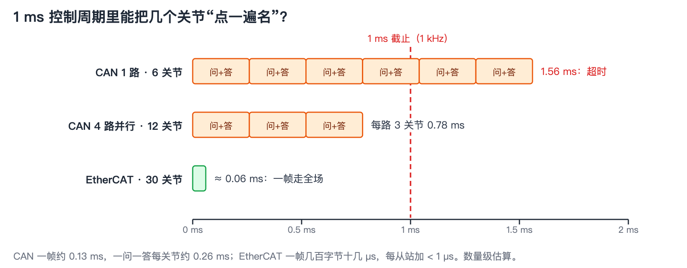
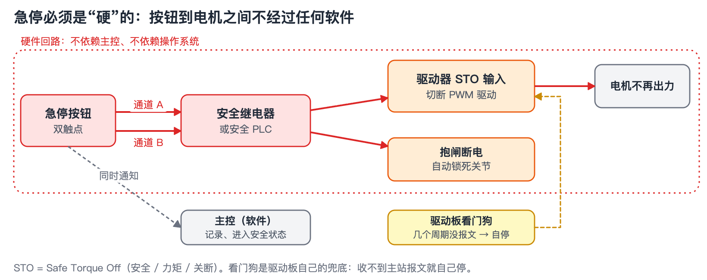
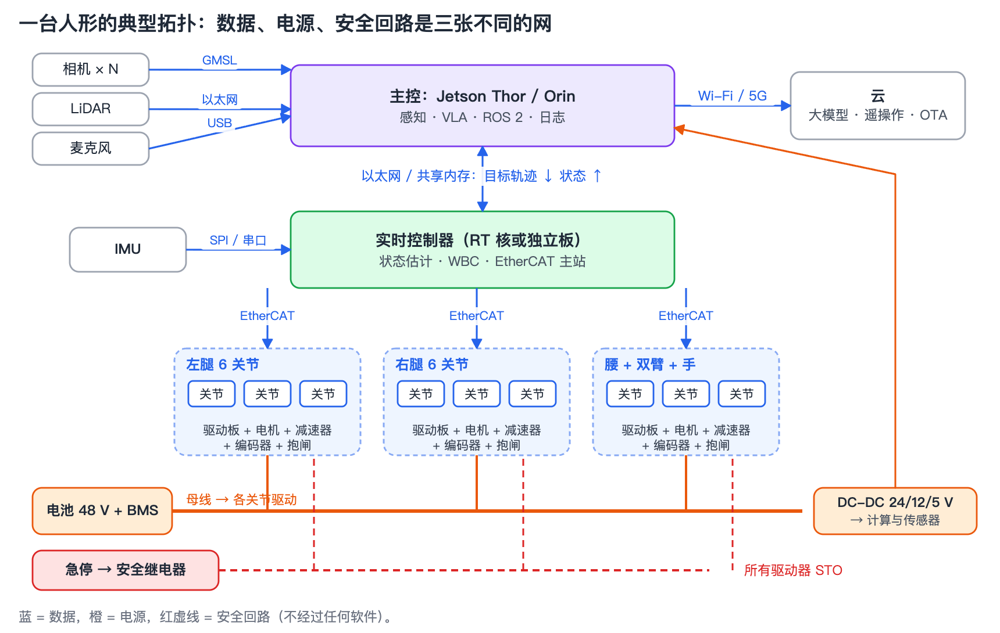

第 5 章 · 电气与计算架构：大脑、小脑、神经和血管
本地运行
git clone https://github.com/wikieden/robot-architecture
cd robot-architecture/code/notebooks
pip install jupyterlab torch numpy
jupyter lab ch05_electrical_compute.ipynb也可以下载后直接用 VS Code 打开 .ipynb 运行。需要 GPU 的章节在 Colab 里选「代码执行程序 → 更改运行时类型 → GPU」。
本章回答：机器人身上有几块"电脑"、各管什么？关节总线为什么多用 EtherCAT 或 CAN-FD？电源和急停回路怎么设计？
编写日期：2026-11-04 · 上一章：第 4 章 传感器 · 下一章：第 6 章 底层控制 · 总览：00-overview.md
对应原文：materials/text/modern-robotics-lynch-park.txt（Lynch & Park，Modern Robotics，2017 预印本） §8.9 L14485–L14494（力矩指令约 1 kHz 更新，驱动器电压环快十倍以上）。总线、电源、急停原文没有，对照附录推荐的 EtherCAT 官方介绍和 ISO 11898-1（不在本地）
本章缩写：SoC = System on Chip（片上 / 系统）；INT8 = 8-bit integer（8 位整数）；TOPS = Tera Operations Per Second（每秒万亿次运算）；FP4 = 4-bit Floating Point（4 位浮点）；TFLOPS = Tera Floating-point Operations Per Second（每秒万亿次浮点运算）；PREEMPT_RT = preemptible real-time（可抢占 / 实时补丁）；FPGA = Field-Programmable Gate Array（现场 / 可编程 / 门阵列）；STM32 = 意法半导体（STMicroelectronics）的 32 位 MCU 系列；TI = Texas Instruments（德州仪器）；EtherCAT、CAN-FD（第 1 章）；DC = Distributed Clocks（分布式 / 时钟，EtherCAT 里）；Mbps / Gbps = megabits / gigabits per second（每秒兆位 / 吉位）；RS-485 = Recommended Standard 485（推荐 / 标准 485）；TSN = Time-Sensitive Networking（时间 / 敏感 / 网络）；GMSL = Gigabit Multimedia Serial Link（千兆 / 多媒体 / 串行链路）；MIPI = Mobile Industry Processor Interface（移动 / 产业 / 处理器 / 接口）；BMS = Battery Management System（电池 / 管理 / 系统）；SOC = State of Charge（荷电 / 状态，剩余电量）；DC-DC = Direct Current to Direct Current converter（直流转直流变换器）；E-stop = Emergency stop（急停）；PLC = Programmable Logic Controller（可编程 / 逻辑 / 控制器）；STO = Safe Torque Off（安全 / 力矩 / 关断）；SPI = Serial Peripheral Interface（串行 / 外设 / 接口）；OTA = Over-The-Air（空中升级）；Wh / Ah = watt-hour / ampere-hour（瓦时 / 安时）；SOEM = Simple Open EtherCAT Master（简单 / 开源 / EtherCAT 主站）；ISO = International Organization for Standardization（国际标准化组织）；CPU = Central Processing Unit（中央 / 处理 / 单元）；ARM = Advanced RISC Machines（RISC = Reduced Instruction Set Computer：精简 / 指令集 / 计算机；一种处理器架构）；PC = Personal Computer（个人 / 计算机；工业 PC 即工控机）；GB = gigabyte（吉字节）；AGX：NVIDIA Jetson 高端型号的产品名（官方没给全称）；ALOHA = A Low-cost Open-source HArdware system for bimanual teleoperation（低成本开源双臂遥操作硬件，第 9 章细讲）。全部缩写见 附录 · 缩写与术语表
讲解
第 1 步：三种计算单元
白话类比：公司里有总经理（想战略，不怕慢）、车间主任（盯节拍，必须准时）、流水线工人（手上动作，几乎是反射）。
| 角色 | 硬件 | 跑什么 | 要求 |
|---|---|---|---|
| 主控（大脑） | NVIDIA Jetson AGX Orin / Thor、x86 工控机 + 独显、手机级 SoC（RK3588 等） | 感知、VLA / 规划、ROS 2 主体、日志 | 算力和功耗比；不要求硬实时 |
| 实时控制器（小脑） | 主控上的隔离实时核（PREEMPT_RT Linux）、独立 ARM Cortex-A/R 板、或工业 PC 跑 EtherCAT 主站 | WBC、阻抗控制、状态估计、总线主站 | 硬实时：1 kHz 周期抖动 ≲ 几十 µs |
| 关节驱动（脊髓） | 每个关节一块 MCU（STM32 / TI C2000 等）或 FPGA | FOC 电流环、编码器读取、过流过温保护 | 10–40 kHz，确定性最高 |
为什么分开：GPU 推理和 Linux 调度会抖；只要控制环和它们共享一个 CPU 核、一把锁，就可能被拖慢。所以控制环要么放独立核（CPU 隔离 + 实时优先级），要么放独立板子。
算力参考（以 NVIDIA 公布的峰值为准，是稀疏 / 低精度下的理论数）：Jetson AGX Orin 约 275 INT8 TOPS；Jetson AGX Thor（2025 年发布，Blackwell 架构，128 GB 内存）约 2000 FP4 TFLOPS 量级，目标就是在机上跑 VLA / VLM。实际可用远低于峰值。
第 2 步：总线：控制周期内要把所有关节"点一遍名"
每个控制周期（例如 1 ms），主站要给每个关节发"目标"，再收回"状态"。总线够不够快，决定了关节数 × 频率的上限。
| 总线 | 速率 | 拓扑 | 特点 | 谁在用 |
|---|---|---|---|---|
| EtherCAT | 100 Mbps（以太网物理层） | 线形 / 环形菊花链 | 一帧报文"穿过"所有从站，每个从站在报文经过时就地读写（processing on the fly）；分布式时钟（DC）同步精度亚微秒 | 工业臂、多数人形、高端四足 |
| CAN / CAN-FD | CAN 1 Mbps；CAN-FD 数据段 2–8 Mbps | 总线 | 便宜、抗干扰、成熟；一问一答，关节多时带宽紧，常分成多路 | 消费级四足、低成本人形、底盘 |
| RS-485 / 串口 | 1–10 Mbps | 总线 | 最便宜，协议自定 | 舵机（Dynamixel、Feetech）、ALOHA / SO-100 |
| 以太网 / TSN | 1–10 Gbps | 交换机 | 大带宽，TSN 加了时间调度 | 相机、LiDAR、主控之间 |
| USB3 / GMSL / MIPI | Gbps 级 | 点对点 | 相机专用；GMSL 走长线抗干扰 | 相机 |
估算 CAN 的瓶颈（一问一答）：一帧标准 CAN 报文约 110–130 位，1 Mbps 下约 0.13 ms。每个关节"发 1 帧 + 回 1 帧"约 0.26 ms。6 个关节一路 CAN 就要约 1.6 ms，跑不到 1 kHz；所以人形常用 4–8 路 CAN 并行，或者换 EtherCAT。
EtherCAT：一帧几百字节的报文，100 Mbps 下传输只要十几微秒，每个从站只加不到 1 µs 的延迟，几十个关节也能轻松做到 1 kHz 甚至更高。

图 5-1 · 1 ms 周期的总线账：CAN 一路 6 个关节就超时，要拆成多路；EtherCAT 一帧走全场只占几十微秒。
第 3 步：电源：峰值电流和回馈能量
| 部件 | 作用 | 设计要点 |
|---|---|---|
| 电池组 | 主能源（人形常见 48 V 左右的锂电池） | 能量（Wh）定续航；峰值放电倍率定能不能起跳、举重 |
| BMS | 电池管理：均衡、过充过放保护、SOC 估计 | 和主控通信，低电量提前回充 |
| 母线电容 | 吸收瞬时电流尖峰 | 电机加速瞬间电流很大 |
| DC-DC | 把母线电压转成 24 / 12 / 5 V 给计算和传感器 | 计算和电机分开供电，避免电机噪声干扰 |
| 制动回馈 / 泄放电阻 | 电机减速时变成发电机，把能量灌回母线 | 电池满电时回馈能量没处去会抬高母线电压，要有泄放电阻或吸收电路 |
第 4 步：安全回路必须是"硬"的
急停（E-stop）不能只是一个软件按钮：
急停按钮 ──→ 安全继电器 / 安全 PLC ──→ 驱动器的 STO 输入（断开 PWM 驱动）
│ └→ 抱闸断电（自动锁死）
└→ 同时通知主控（软件层记录、进入安全状态）
- STO（Safe Torque Off）：硬件上切断驱动器给电机的功率输出，电机不再出力。不依赖任何软件。
- 双通道冗余：两路独立接线，一路断线也能检测出来。
- 看门狗：驱动板如果一段时间（例如几个控制周期）收不到主站报文，自己进入安全状态。
第 10 章细讲安全分级和标准。

图 5-2 · 急停回路：按钮经双通道和安全继电器直接切 STO、断抱闸，全程不经过软件；主控只是被通知。
第 5 步：一台人形的典型拓扑
┌──────────── 主控：Jetson Thor / Orin ─────────────┐
相机 ×N ─GMSL─┤ 感知 · VLA · ROS 2 · 日志 │── Wi-Fi / 5G ── 云（大模型、遥操作、OTA）
LiDAR ─以太网─┤ │
麦克风 ─USB──┤ │
└──────────────┬─────────────────────────────────┘
│ 以太网 / 共享内存（目标轨迹、状态）
┌──────────────▼────────────────┐
IMU ─SPI/串口─┤ 实时控制器（RT 核或独立板） │
│ 状态估计 · WBC · EtherCAT 主站 │
└───┬───────────┬───────────┬──────┘
│ EtherCAT │ EtherCAT │ EtherCAT（或多路 CAN-FD）
左腿 6 关节 右腿 6 关节 腰 + 双臂 + 手
│
每个关节：驱动板（FOC）+ 电机 + 减速器 + 编码器 + 抱闸
电池 48 V ── BMS ── 母线 ── 各关节驱动；DC-DC ── 计算与传感器
急停 ── 安全继电器 ── 所有驱动器 STO

图 5-3 · 一台人形的典型拓扑：蓝色数据网、橙色电源网、红色安全回路是三张独立的网。
动画演示

可交互版：animations/05-bus-cycle.html（可改关节数）。
怎么看：
- 上面 CAN：主站给关节 1 发一帧、等它回一帧，再问关节 2……一圈问完的时间随关节数线性增长。
- 下面 EtherCAT：一帧报文从主站出发，穿过所有关节（每个关节在报文经过时取走自己的目标、塞进自己的状态），到头折返回来。
- 右边数字是"一圈要多久"和"最高能跑多少 Hz"。把关节数拖到 12，CAN 一路就跑不到 1 kHz 了。
- 时间按比例放慢了，动画里的速度不是真实速度。
公式
| 名称 | 式子 |
|---|---|
| CAN 一圈时间（一问一答） | \(T_{CAN} \approx n \times 2 \times \dfrac{\text{bits/帧}}{\text{速率}}\) |
| 最高控制频率 | \(f_{max} = 1/T_{cycle}\) |
| EtherCAT 一圈 | \(T_{ECAT} \approx \dfrac{8 \times \text{字节数}}{100\,\text{Mbps}} + n \times t_{从站}\) |
| 电池续航 | \(t \approx \dfrac{E_{Wh}}{P_{平均}}\) |
练习与作答记录
题 1：一路 1 Mbps 的 CAN，每帧按 130 位算，一问一答。要让 12 个关节跑 500 Hz，至少要几路 CAN？
作答：（待作答）
题 2：为什么急停要接到驱动器的 STO 硬件输入上，而不是让主控收到急停信号后"发一条停止指令"？
作答：（待作答）
题 3：一台人形电池 1 kWh，站立时平均 300 W，走路时平均 600 W。各能撑多久？为什么峰值功率（比如跳跃时几 kW）对电池选型也很重要？
作答：（待作答）
口诀
大脑算得多但会抖，小脑算得少但准时，关节板只管电流不出错。
CAN 挨个点名，EtherCAT 一帧走全场；急停走硬线，不走软件。
本章复习卡片
A13 三种计算单元为什么分开、A14 EtherCAT vs CAN、A15 STO 与硬件急停（见 review.md）
附录 · 延伸阅读
留给以后深入学习用，不影响本章主线。★ 是建议先读的。
推荐阅读
- ★ EtherCAT Technology Group，"EtherCAT – the Ethernet Fieldbus"技术介绍（ethercat.org 官方白皮书）：processing on the fly、分布式时钟。
- ★ 开源 EtherCAT 主站：SOEM（Simple Open EtherCAT Master）、IgH EtherCAT Master；对照读一个 1 kHz 周期循环的例子。
- Bosch，CAN-FD 规范（ISO 11898-1:2015）：帧格式、仲裁、位速率切换。
- NVIDIA Jetson AGX Thor / Orin 开发者文档：算力、功耗模式、实时内核支持。
- Linux PREEMPT_RT：自 Linux 6.12（2024）起合入主线；
cyclictest测周期抖动。 - 开源人形 / 四足的电气设计参考：MIT Mini Cheetah（CAN）、Berkeley Humanoid（2024，开源研究人形，论文介绍了执行器与系统设计）。
数学原理
- 比特率与帧长换算；排队延迟直觉。
- 功率 \(P = UI\)、能量 \(E = Pt\)、电池容量 Wh = V × Ah。
公式清单
见正文"公式"一节的表。
代码对照：把本章的数字用代码算一遍
用 Python + NumPy（Numerical Python：数值 / Python）把讲义里讲过的数算一遍，不算练习题。代码在仓库本地
robot-system-architecture/solutions/chapter-code/ch05_electrical_compute.py，配套测试tests/test_ch05.py，notebook 在notebooks/ch05_electrical_compute.ipynb。Mac 上直接能跑，不需要 GPU：
bash cd robot-system-architecture/solutions/chapter-code uv run python ch05_electrical_compute.py # 一步一步打印 uv run pytest tests/test_ch05.py
讲义 ↔ 代码（EtherCAT 300 字节、30 个从站、电池 48 V × 10 Ah 是编的）：
| 讲义 | 公式 | 写法 | 跑出来 |
|---|---|---|---|
| 第 2 步 一帧 CAN | 位数 ÷ 速率 | frame_time_s(130, 1e6) |
0.13 ms（110 位是 0.11 ms） |
| 第 2 步 一问一答 | 2 帧 | can_cycle_s(1) |
0.26 ms |
| 第 2 步 6 个关节一路 CAN | \(n \times 2 \times\) 帧时间 | can_cycle_s(6) |
1.56 ms → 最高 641 Hz |
| 第 2 步 EtherCAT | \(8 \times\) 字节 ÷ 100 Mbps + \(n \times t_{从站}\) | ecat_cycle_s(300, 30) |
24 + 30 = 54 µs → 约 18.5 kHz |
| 数学原理 电池能量 | Wh = V × Ah | battery_wh(48, 10) |
480 Wh |
关键几行：
def can_cycle_s(n_joints, bits_per_frame=130, rate_bps=1e6):
return n_joints * 2 * bits_per_frame / rate_bps # 每个关节一来一回两帧，挨个点名
def ecat_cycle_s(frame_bytes, n_slaves, t_slave_s=1e-6, rate_bps=100e6):
return 8 * frame_bytes / rate_bps + n_slaves * t_slave_s # 一帧穿过全部从站，每站只加一点延迟
代码里才看得到的 2 件事：
- 单位最容易错：速率是"位每秒"，报文长度是"字节"，所以 EtherCAT 那里要乘 8。
- 这是理想估算：真实 CAN 还有仲裁、位填充、帧间隔，EtherCAT 还有主站软件的处理时间，实际一圈更长。
自己改一改（不影响练习答案）：
- 把
bits_per_frame改成 110，看 6 个关节一圈变成多少、能不能到 1 kHz。 - 把 EtherCAT 从站数加到 60，看一圈还剩多少余量。